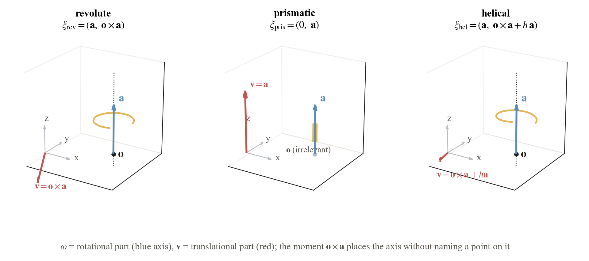
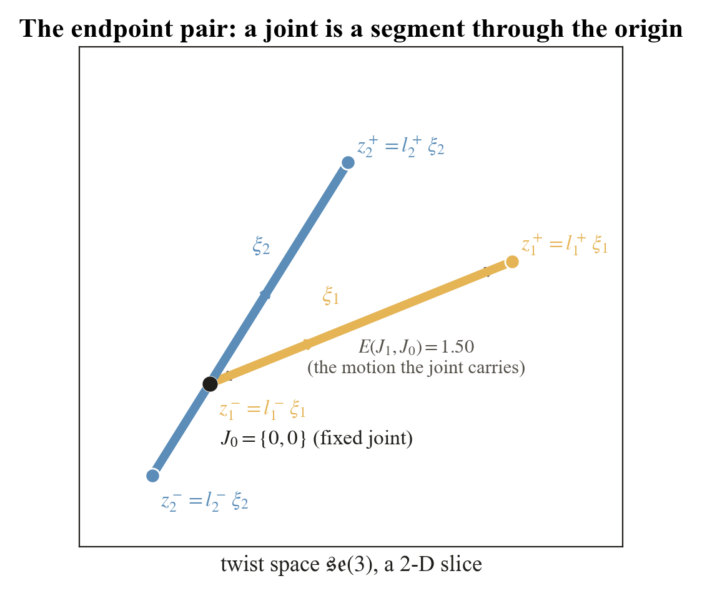
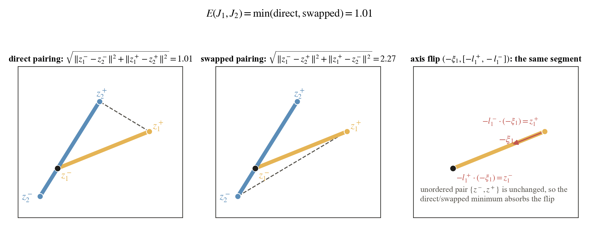
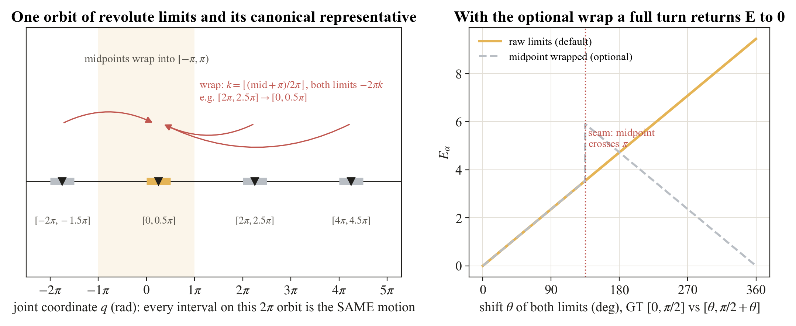
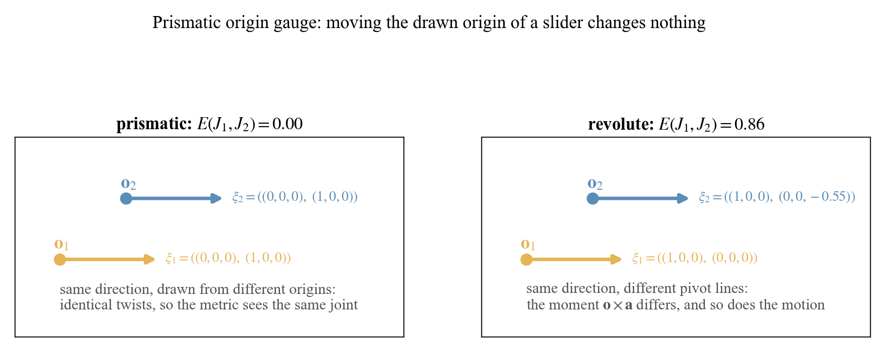
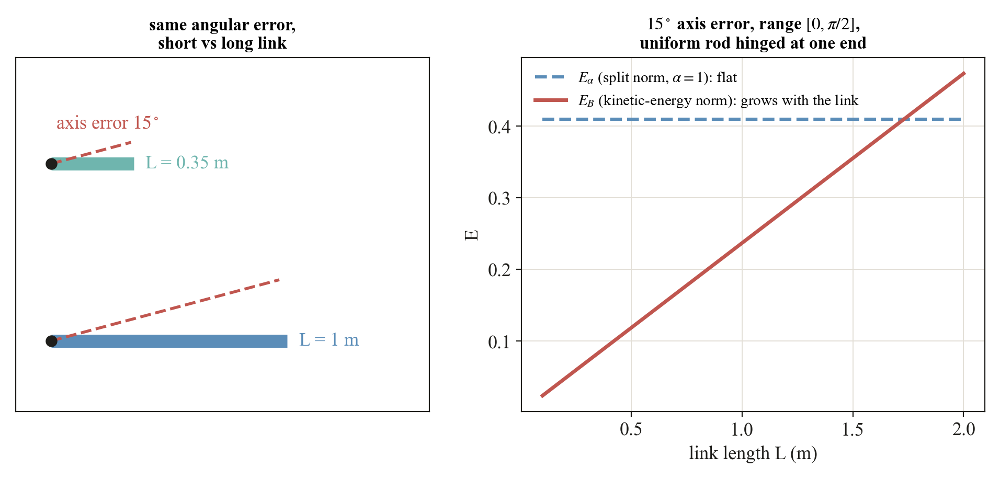
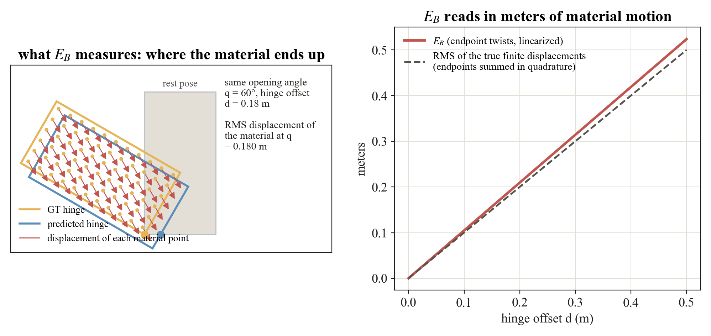
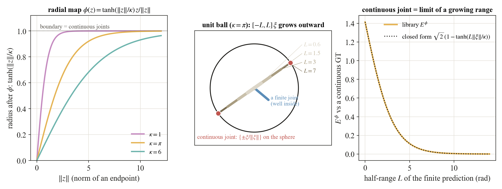
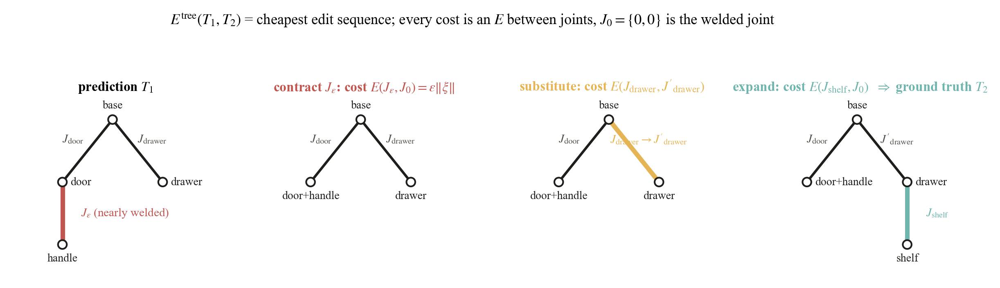
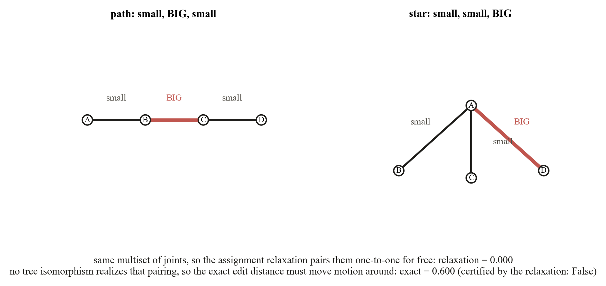

Section 4
Core concepts, as a tutorial
From a joint’s movement rule to a whole-object error.
The Overview introduces the object and the three-stage concept map. Here, we work through the definitions and calculations behind each step.
Read the explanations in order. Choose Explore for an interactive example.
One continuous tutorial4 interactive guidesSections 4.1–4.8
This section is the long version of the paper's Section 3, written for ourselves. Each concept gets its
own figure, drawn by scripts/make_tutorial_figures.py with every number computed by the
library, and a short list of the confusions it is meant to clear up. The paper's notation is kept
throughout.
The concepts build on each other, so they are best read in order:
- 4.1A joint is a twist
- 4.2The endpoint pair
- 4.3The metric E and the ℤ₂ swap
- 4.4Wrap and gauge symmetries
- 4.5Which norm: Eα versus EB
- 4.6Continuous joints and the compactification Eϕ
- 4.7Trees: Etree and the assignment relaxation
- 4.8Reading the table headers
4.0 Notation cheat sheet
| Symbol | Meaning | In code |
|---|---|---|
| ξ = (ω, v) | A twist, an element of se(3) ≅ ℝ⁶: rotational part ω, translational part v. Joints use a unit screw: ‖ω‖ = 1 if it rotates, else ‖v‖ = 1. | Twist, Joint.xi_hat |
| a, o, h | Axis direction, a point on the axis (the origin), and the pitch (meters per radian). These are the URDF parameters that the twist absorbs. | screw_twist(a, o, type, h) |
| q | The joint coordinate: radians for revolute and helical, meters for prismatic. q = 0 is the stored URDF state (the anchor g₀). | sweep parameter |
| l⁻, l⁺ | The motion limits, values of q. ±∞ for a continuous joint. | Joint.a, Joint.b |
| J = (ξ, [l⁻, l⁺]) | A one-DOF joint: what it moves along and how far. | Joint |
| z± = l± ξ | The two endpoint twists. Together they form the unordered pair {z⁻, z⁺} that the metric compares. | EndpointPair.u/.v |
| J₀ = {0, 0} | The fixed (welded) joint, both endpoints at the origin. E(J, J₀) is the motion a joint carries. | cost_to_fixed |
| E | The quotient metric on endpoint pairs. A subscript names the norm inside it, a superscript names an extension. | joint_metric |
| ‖·‖α, Eα | Split norm ‖Δω‖² + α²‖Δv‖² with an inverse length α. Dimensionless. Benchmark default α = 1. | make_split_norm(alpha) |
| ‖·‖B, EB | Kinetic-energy norm of the moving link B (mass m, center of mass c, inertia I). In meters. | make_kinetic_energy_norm(inertia) |
| ϕ, κ, Eϕ | Radial compactification into the unit ball with scale κ (default π), and E evaluated after it. Handles continuous joints. | radial_compactify, compactified_joint_metric |
| Etree | The metric lifted to whole kinematic trees as an edit distance whose costs are all E values. | exact_tree_distance, assignment_tree_distance |
4.1A joint is a twist

A URDF describes a joint with four separate things: a type, an axis direction a, an origin o, and limits. The first three are really one object, an infinitesimal rigid motion, and that object is the twist ξ = (ω, v). A revolute joint rotates about the line through o with direction a, which is ξrev = (a, o × a). A prismatic joint slides along a and has no rotation at all, ξpris = (0, a). A helical joint adds a translation of h meters per radian along the axis, ξhel = (a, o × a + h a). Flowing along ξ for q units gives the placement exp(q ξ̂) g₀ of the child link, where g₀ is the placement stored in the file.
Why "unit". The twist is normalized so that q carries the physical unit: radians for rotation, meters for translation. The limits are values of q and inherit that unit.
The anchor is shared data. Prediction and ground truth describe the same object in the same stored state, so g₀ is not something the kinematic metric judges. Re-zeroing q is not free because it moves the anchor, which the stored meshes pin down.
The direction stays fixed. The amount changes.
For this drawer, the movement rule says slide to the right. The coordinate q says how far it is from its stored, fully closed position.
Connect q to the endpoint vectors
That is the current translation. To describe all allowed motion, keep the same rule and use the two limits: z⁻ = 0ξ and z⁺ = 0.50ξ.
Here ξ = (0, 0, 0; 1, 0, 0): three rotation entries, then three translation entries. Each endpoint has six numbers. There are two endpoint vectors, regardless of how many physical points the drawer has.
4.2The endpoint pair

Multiply the unit twist by the two limits and the joint becomes a pair of points in se(3), {z⁻, z⁺} = {l⁻ ξ, l⁺ ξ}. The direction of the segment is the screw, its length is the range, its position along the line is where the range sits relative to the anchor. Nothing about the joint is lost and nothing about it is duplicated. The segment passes through the origin whenever l⁻ ≤ 0 ≤ l⁺, that is, whenever the stored state is inside the range. The fixed joint is the degenerate segment {0, 0}.
Why an unordered pair. Nothing physical distinguishes the two ends of a segment. Ordering them would make the metric depend on which limit is called lower, which is exactly the sign convention the next section removes.
E(J, J₀) is the "size" of a joint. Under the split norm it is √((l⁻)² + (l⁺)²) times a fixed factor, and under the kinetic-energy norm it is the RMS material displacement over the range. The tree metric prices structural edits with it.
4.3The metric E and the ℤ₂ swap

Two unordered pairs can be matched in two ways, direct (z₁⁻ ↔ z₂⁻, z₁⁺ ↔ z₂⁺) or swapped. Each way has a flat distance in se(3) × se(3), the square root of the two squared endpoint differences, and
E(J₁, J₂) = min{ ‖z₁⁻ − z₂⁻‖² + ‖z₁⁺ − z₂⁺‖², ‖z₁⁻ − z₂⁺‖² + ‖z₁⁺ − z₂⁻‖² }1/2.
This is the quotient distance of a flat space by the group ℤ₂ acting as the swap, and a quotient by a finite group of isometries is again a metric. That single fact gives the triangle inequality, which no hand-built combination of component errors has.
Squares then a root, not a sum of norms. The two endpoint differences are combined in quadrature. This is what makes E the flat distance of the product space and what makes EB an RMS quantity later.
Where E is not smooth. Only on the tie locus where the two pairings cost the same. For training,
training_loss replaces the min by a smooth swap-invariant surrogate.
Try both pairings. Keep the smaller error.
The reference drawer opens 50 cm. Adjust the predicted range, then reverse how the prediction names its positive direction. The physical range stays the same when the direction and limits reverse together.
Why do the labels swap?
With a rightward rule, the limits are [0, 50]. With a leftward rule, the same travel uses [−50, 0]. Multiplying the rule by the limits still gives physical translations of 0 and +50 cm; their lower/upper labels trade places.
The superscripts − and + mean lower and upper coordinate limits, not negative and positive physical movement. The picture shows one component of the six-number endpoint vectors, not two points attached to the drawer.
We use EB here so the result has length units. Pure translation moves every material point equally. E is already an evaluation score; using it, or a smooth surrogate, as a training loss is an optional next use.
4.4Wrap and gauge symmetries

A revolute exponential is 2π-periodic, so shifting both limits by
2πk rewrites the same motion over the same anchor. The definition of
E uses the limits exactly as stored, so such a pair of encodings is
charged the shift. As an optional preprocessing step, wrap_revolute_limits
shifts a revolute joint's limits by the common 2πk that places the
midpoint ½(l⁻ + l⁺) in [−π, π), and
joint_to_endpoint_pair(joint, wrap_revolute=True) applies it before forming the pair.
Only revolute joints can be wrapped: a prismatic shift translates and a helical shift also
translates, so for them k = 0 is forced.
The wrap has a seam. Picking one representative per orbit is a choice of fundamental domain, and at its boundary (midpoint exactly ±π) the representative jumps. With the wrap on, E is invariant under the full-turn shift but is discontinuous there, which is the other reason it stays optional.

A prismatic twist is (0, a) and contains no origin at all, so moving the drawn origin is pure gauge and the metric returns zero. The prior origin score charges ‖o₁ − o₂‖ for it. For a revolute joint the origin matters through the moment, which is the physically right behavior: a hinge on a different line moves the door differently.
4.5Which norm: Eα versus EB
The formula for E only asks for a norm on twist differences Δz = (Δω, Δv) that comes from an inner product. Two are offered, and the subscript on E says which one is inside.

The split norm ‖Δz‖α² = ‖Δω‖² + α²‖Δv‖² weighs rotation against translation through one inverse length α. It needs no geometry, is dimensionless, and compares every joint of every object by one rule. The kinetic-energy norm ‖Δz‖B² = (1/m) Δωᵀ I Δω + ‖Δv + Δω × c‖² lets the moving link set the scale: m, c, and I are the mass, center of mass, and inertia of the ground-truth child link. Under it EB is in meters and equals the RMS linearized motion of the link's material.

α is a size assumption. For a centered link with isotropic inertia and gyration radius r, the kinetic norm equals r² times the split norm at α = 1/r. A global α therefore assumes every link has the same size 1/α. The object-scale ablation shows the consequence: EB(s) = s EB(1) under a uniform scaling s, while Eα is flat on angular errors.
EB is still a metric. The body B is fixed by the ground truth before any prediction is seen and is the same for every method on that joint, so the norm is one fixed inner-product norm and the quotient argument applies verbatim. Different ground-truth joints carry different norms, which is the intended physical weighting.
Units. Eα is a pure number, EB is meters. Never compare their heights, only their shapes.
Same angle error. Different amount of material motion.
This door should stop at 60°, but the prediction allows 75°. Make the door wider while keeping that 15° error. Points farther from the hinge move farther.
Same angular error → same score. No body geometry is needed.
About 9.1 cm of RMS linearized discrepancy.
Which one would we use, and why?
Eα compares motion descriptions using one geometry-independent rule. EB measures how much that discrepancy affects the reference part’s material. They answer different questions; they are alternative norms inside the same endpoint-matching formula.
For this example, both lower endpoints are zero. The upper endpoints differ by 15° = π/12 radians. With the hinge through the origin, Eα = π/12. For a thin uniform door, EB = (π/12) W / √3.
The connectors show actual finite point displacements. EB uses their linearized counterpart; it is not an exact average over all door angles. Here only one endpoint differs, so its body RMS is also the full joint score.
The benchmark reports physical EB for finite joints and a compactified split score for all joints. These values have different units, so their numerical heights should not be compared.
4.6Continuous joints and the compactification Eϕ

A continuous joint has l± = ±∞, so its endpoint twists are at infinity and the flat distance is undefined. The radial map ϕ(z) = tanh(‖z‖/κ) z/‖z‖ pulls all of se(3) into the open unit ball and sends the continuous joint to the antipodal boundary pair {±ξ/‖ξ‖}, the axis direction up to sign. Then Eϕ(J₁, J₂) = E({ϕ(z₁⁻), ϕ(z₁⁺)}, {ϕ(z₂⁻), ϕ(z₂⁺)}). Against a continuous ground truth with unit screw, a finite prediction [−L, L] on the same screw scores √2 (1 − tanh(L‖ξ‖/κ)): it starts at √2, the distance from the welded joint, and decays to zero. A continuous joint is literally the limit of a growing range, with no formula switch.
What κ does. It is a pure horizontal dilation of every curve, with half decay near L‖ξ‖ ≈ 0.55 κ. The default κ = π keeps ranges up to a full turn in the responsive part of tanh, and on the benchmark's finite ground-truth joints none saturate (95th percentile radius 0.78 at worst).
Finite joints may also be compactified. The map is defined on all of se(3), so Eϕ is the one score that covers every joint type at once. That is why the benchmark's common column is Eαϕ. Raw EB is reported only on pairs whose limits are both finite.
4.7Trees: Etree and the assignment relaxation

An object is a tree with links as nodes and joints on the edges, and the same object admits many
trees: parts can be relabeled, the base re-chosen, a handle welded to a drawer or split off. The tree
metric is the cheapest sequence of edits from one tree to the other,
Etree(T₁, T₂) = infπ Σo∈π c(o), with
substitution costing E(J, J′) and contraction or expansion costing
E(J, J₀). A spurious joint that barely moves costs
ε‖ξ‖, not a constant penalty, so topology errors and joint errors are priced in
the same motion currency and the metric is continuous through the welded boundary. Exactly fixed edges
are contracted first (contract_small_edges) because they are representation noise.

Any edit sequence can be reordered into contract, then substitute along a tree isomorphism, then
expand. The exact distance is therefore a minimum over matchings of the edge sets that extend to an
isomorphism of the contracted trees. Dropping that realizability condition gives the
assignment relaxation: a Hungarian matching over the joint multisets with
E(J, J₀) as the unmatched cost (assignment_tree_distance). It is
always a lower bound, it is polynomial for any input, and it needs only the multiset of predicted
joints. Whenever its optimal matching happens to be realizable, checked in linear time by
matching_realizable, the relaxation certifies the exact value.
exact_tree_distance returns (distance, certified) and falls back to a small
constrained search otherwise.
Why not a constant topology penalty λ. It jumps by λ the moment a joint appears, is capped at 2λ once unmatching becomes cheaper than matching, and the forced-matching variant escapes the cap only by breaking the triangle inequality. Motion-priced edits have no knob and none of these failures.
The per-link weighting and the metric proof. With one fixed inner product Etree is a metric on representation-equivalence classes. With the kinetic-energy norm instantiated per ground-truth link, contraction and expansion change which body weighs which joint, so that variant is used as a score without the metric claim.
Correct joints can still make the wrong mechanism.
The reference latch is attached to the drawer. The original prediction attaches it to the body. Pull the drawer: the two objects behave differently even though their joint descriptions match.
Compared with itself, the reference always has zero error.
The latch is attached to the wrong part. Two edits are needed to match the reference.
Scroll sideways to compare the two trees →
Both cards use tree error Eαtree (dimensionless), with the reference as the target. Zero means the trees match.
Pull the drawers to see whether the latch follows. The scores compare allowed motion and connections, so moving this slider does not change them.
Why compare connections as well as joints?
A joint-list comparison checks the joint descriptions while ignoring which parts they connect. It can miss a structural mistake that the tree error catches.
All three joint descriptions match. Ignoring connections misses the misplaced latch.
How are these edit costs calculated?
Contracting the latch joint costs Eα(Jlatch, J₀). Expanding the drawer node to create the correct latch connection costs Eα(J₀, Jlatch). J₀ = {0, 0} is the fixed joint: no relative movement.
In this teaching example the latch rotates from 0 to 15° about an axis through the coordinate origin. Each edit costs 15° in radians: π/12 ≈ 0.262. The total is π/6 ≈ 0.524.
With α = 1 m⁻¹, the other fixed-joint costs are 0.500 for the drawer’s 0.50 m travel and 1.640 for the door’s 90° range about a hinge offset by 0.30 m. Changing this four-node star into the reference four-node path requires at least one contraction and one expansion. The latch is the cheapest edge to remove and restore, so the shown repair is minimal.
Contraction merges two nodes. Expansion splits a node to introduce a new joint. These are edits to the mechanism’s description. One common norm is used for all edits here; we do not switch body-dependent rulers between steps.
4.8Reading the table headers
| Column | Norm | Extension | Defined on |
|---|---|---|---|
| EB | kinetic-energy (meters) | none, raw endpoints | matched pairs with finite limits on both sides |
| Eαϕ | split, α = 1 | compactified, κ = π | every matched pair, continuous joints included |
| Eαϕ,tree | split, α = 1 | compactified and lifted to the tree | whole objects, the primary score |
The rule is simple once seen: the subscript is the inner product inside the norm, the superscript is what was done to the endpoints before or after E. The design space is the product of the two choices, and any cell of it is a legitimate score.